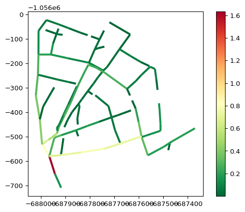

from mikeio1d import Res1D
res = Res1D('../data/network.res1d')
res_catchments = Res1D('../data/catchments.res1d')Locations
Locations are where model results exist in the Network. The main location types are nodes, reaches, gridpoints, and catchments.
Data structures
There are two main data structures for locations: location collections and single locations.
Location collections
Access location collections from a Res1D object. Each collection shows available quantities and location IDs.
res.nodes
<ResultNodes>
Names (119)
- 1
- 2
- 3
- 4
- 5
- 6
- 7
- 8
- 9
- 10
- 11
- 13
- 14
- 15
- 17
- 20
- 21
- 22
- 23
- 24
- 25
- 26
- 27
- 28
- 29
- 30
- 31
- 32
- 33
- 34
- 35
- 36
- 37
- 38
- 39
- 40
- 41
- 42
- 43
- 44
- 45
- 47
- 48
- 49
- 50
- 51
- 52
- 53
- 54
- 56
- 57
- 59
- 60
- 61
- 62
- 63
- 64
- 65
- 66
- 67
- 68
- 69
- 70
- 71
- 72
- 73
- 74
- 75
- 76
- 77
- 78
- 79
- 80
- 81
- 82
- 83
- 84
- 85
- 86
- 87
- 88
- 89
- 90
- 91
- 92
- 93
- 94
- 95
- 96
- 97
- 98
- 99
- 100
- 101
- 102
- 103
- 104
- 105
- 106
- 107
- 108
- 109
- 110
- 111
- 112
- 113
- 114
- 12
- 16
- 46
- 55
- 58
- 116
- 117
- 118
- 115
- 119
- 120
- Weir Outlet:119w1
Quantities (1)
- Water level (m)
Derived Quantities (3)
- NodeFlooding
- NodeWaterDepth
- NodeWaterLevelAboveCritical
res.reaches
<ResultReaches>
Names (118)
- 100l1
- 101l1
- 102l1
- 103l1
- 104l1
- 105l1
- 106l1
- 107l1
- 108l1
- 109l1
- 10l1
- 110l1
- 111l1
- 112l1
- 113l1
- 114l1
- 116l1
- 117l1
- 118l1
- 119l1
- 11l1
- 12l1
- 13l1
- 14l1
- 15l1
- 16l1
- 17l1
- 1l1
- 20l1
- 21l1
- 22l1
- 23l1
- 24l1
- 25l1
- 26l1
- 27l1
- 28l1
- 29l1
- 2l1
- 30l1
- 31l1
- 32l1
- 33l1
- 34l1
- 35l1
- 36l1
- 37l1
- 38l1
- 39l1
- 3l1
- 40l1
- 41l1
- 42l1
- 43l1
- 44l1
- 45l1
- 46l1
- 47l1
- 48l1
- 49l1
- 4l1
- 50l1
- 51l1
- 52l1
- 53l1
- 54l1
- 55l1
- 56l1
- 57l1
- 58l1
- 59l1
- 5l1
- 60l1
- 61l1
- 62l1
- 63l1
- 64l1
- 65l1
- 66l1
- 67l1
- 68l1
- 69l1
- 6l1
- 70l1
- 71l1
- 72l1
- 73l1
- 74l1
- 75l1
- 76l1
- 77l1
- 78l1
- 79l1
- 7l1
- 80l1
- 81l1
- 82l1
- 83l1
- 84l1
- 85l1
- 86l1
- 87l1
- 88l1
- 89l1
- 8l1
- 90l1
- 91l1
- 92l1
- 93l1
- 94l1
- 95l1
- 96l1
- 97l1
- 98l1
- 99l1
- 9l1
- Weir:119w1
- Pump:115p1
Quantities (2)
- Water level (m)
- Discharge (m^3/s)
Derived Quantities (6)
- ReachAbsoluteDischarge
- ReachFilling
- ReachFlooding
- ReachQQManning
- ReachWaterDepth
- ReachWaterLevelAboveCritical
res_catchments.catchments
<ResultCatchments>
Names (31)
- 100_16_16
- 105_1_1
- 10_22_22
- 113_21_21
- 118_30_30
- 119_32_32
- 14_20_20
- 20_2_2
- 22_8_8
- 25_26_26
- 28_6_6
- 29_4_4
- 32_19_19
- 33_24_24
- 34_23_23
- 40_29_29
- 43_11_11
- 48_13_13
- 51_14_14
- 57_17_17
- 5_31_31
- 64_12_12
- 67_18_18
- 6_25_25
- 76_7_7
- 79_10_10
- 82_27_27
- 84_15_15
- 90_28_28
- 94_9_9
- 9_3_3
Quantities (5)
- Total Runoff (m^3/s)
- Actual Rainfall (m/s)
- Zink, Load, RR (kg/s)
- Zink, Mass, Accumulated, RR (kg)
- Zink, RR (mg/l)
Derived Quantities (0)
Note
Gridpoints only exist as single locations on a reach, and have no collection.
Single locations
Access a single location by indexing its respective collection with its unique ID. Each location shows available quantities and static properties.
res.nodes['1']
<Manhole: 1>
Attributes (8)
- id: 1
- type: Manhole
- xcoord: -687934.6000976562
- ycoord: -1056500.69921875
- ground_level: 197.07000732421875
- bottom_level: 195.0500030517578
- critical_level: inf
- diameter: 1.0
Quantities (1)
- Water level (m)
Derived Quantities (3)
- NodeFlooding
- NodeWaterDepth
- NodeWaterLevelAboveCritical
res.reaches['100l1']
<Reach: 100l1>
Attributes (9)
- name: 100l1
- length: 47.6827148432828
- start_chainage: 0.0
- end_chainage: 47.6827148432828
- n_gridpoints: 3
- start_node: 100
- end_node: 99
- height: 0.30000001192092896
- full_flow_discharge: 0.12058743359507902
Quantities (2)
- Water level (m)
- Discharge (m^3/s)
Derived Quantities (6)
- ReachAbsoluteDischarge
- ReachFilling
- ReachFlooding
- ReachQQManning
- ReachWaterDepth
- ReachWaterLevelAboveCritical
# gridpoint on reach 100l1 at chainage 23.841
res.reaches['100l1']['23.841']
<ResultGridPoint>
Attributes (5)
- reach_name: 100l1
- chainage: 23.8413574216414
- xcoord: -687897.8000488281
- ycoord: -1056390.4503479004
- bottom_level: 195.0500030517578
Quantities (1)
- Discharge (m^3/s)
Derived Quantities (0)
Tip
Gridpoints can also be indexed by number instead of chainage. For example:
res.reaches['100l1'][0] # first gridpoint
res.reaches['100l1'][-1] # last gridpointres_catchments.catchments['100_16_16']
<Catchment: 100_16_16>
Attributes (3)
- id: 100_16_16
- area: 22800.0
- type: Kinematic Wave
Quantities (5)
- Total Runoff (m^3/s)
- Actual Rainfall (m/s)
- Zink, Load, RR (kg/s)
- Zink, Mass, Accumulated, RR (kg)
- Zink, RR (mg/l)
Derived Quantities (0)
Quantities
Quantities are the actual model results. Each single location or location collection has associated quantities.
res.nodes.WaterLevel<QuantityCollection (119): Water level (m)>res.nodes['1'].WaterLevel<Quantity: Water level (m)>
Can’t find a which location a quantity belongs to?
The Network structure is generic and applies across different domains (e.g. collection systems, water distribution, rivers). Sometimes this can be challenging to find a particular result. Here are some examples of result types mapped onto this structure.
| Location | Example quantities |
|---|---|
| Nodes | Water level (e.g. manhole, basin, outlet, junction) |
| Pump discharge in structure | |
| Reaches | Discharge (e.g. pipes, pumps, weirs) |
| Water level (e.g. at specific chainges) | |
| Catchments | Catchment discharge |
| Total runoff | |
| Global | Water balance |
| User defined variable types |
Refer to the Quantities page for more information on how to read and plot the returned quantities.
Static attributes
Each location has a set of static attributes.
res.nodes['1']._static_attributes['id',
'type',
'xcoord',
'ycoord',
'ground_level',
'bottom_level',
'critical_level',
'diameter']res.nodes['1'].ground_level197.07000732421875Reading data
All result data for a single location or location collection can be read into a pandas DataFrame.
df = res.reaches['100l1'].read()
df.head()| WaterLevel:100l1:0 | WaterLevel:100l1:47.6827 | Discharge:100l1:23.8414 | |
|---|---|---|---|
| 1994-08-07 16:35:00.000 | 195.441498 | 194.661499 | 0.000006 |
| 1994-08-07 16:36:01.870 | 195.441498 | 194.661621 | 0.000006 |
| 1994-08-07 16:37:07.560 | 195.441498 | 194.661728 | 0.000006 |
| 1994-08-07 16:38:55.828 | 195.441498 | 194.661804 | 0.000006 |
| 1994-08-07 16:39:55.828 | 195.441498 | 194.661972 | 0.000006 |
df = res.reaches.read()
df.head()| WaterLevel:100l1:0 | WaterLevel:100l1:47.6827 | WaterLevel:101l1:0 | WaterLevel:101l1:66.4361 | WaterLevel:102l1:0 | WaterLevel:102l1:10.9366 | WaterLevel:103l1:0 | WaterLevel:103l1:26.0653 | WaterLevel:104l1:0 | WaterLevel:104l1:34.4131 | ... | Discharge:93l1:24.5832 | Discharge:94l1:21.2852 | Discharge:95l1:21.9487 | Discharge:96l1:14.9257 | Discharge:97l1:5.71207 | Discharge:98l1:8.00489 | Discharge:99l1:22.2508 | Discharge:9l1:5 | Discharge:Weir:119w1:0.5 | Discharge:Pump:115p1:41.214 | |
|---|---|---|---|---|---|---|---|---|---|---|---|---|---|---|---|---|---|---|---|---|---|
| 1994-08-07 16:35:00.000 | 195.441498 | 194.661499 | 195.931503 | 195.441498 | 193.550003 | 193.550003 | 195.801498 | 195.701508 | 197.072006 | 196.962006 | ... | 0.000004 | 0.000003 | 0.000001 | 0.000005 | 0.000013 | 0.000003 | 0.000002 | 0.000031 | 0.0 | 0.0 |
| 1994-08-07 16:36:01.870 | 195.441498 | 194.661621 | 195.931503 | 195.441605 | 193.550140 | 193.550064 | 195.801498 | 195.703171 | 197.072006 | 196.962051 | ... | 0.000004 | 0.000003 | 0.000001 | 0.000005 | 0.000010 | 0.000003 | 0.000002 | 0.000031 | 0.0 | 0.0 |
| 1994-08-07 16:37:07.560 | 195.441498 | 194.661728 | 195.931503 | 195.441620 | 193.550232 | 193.550156 | 195.801498 | 195.703400 | 197.072006 | 196.962082 | ... | 0.000004 | 0.000003 | 0.000001 | 0.000005 | 0.000010 | 0.000003 | 0.000002 | 0.000033 | 0.0 | 0.0 |
| 1994-08-07 16:38:55.828 | 195.441498 | 194.661804 | 195.931503 | 195.441605 | 193.550369 | 193.550308 | 195.801498 | 195.703690 | 197.072006 | 196.962112 | ... | 0.000004 | 0.000003 | 0.000001 | 0.000005 | 0.000009 | 0.000003 | 0.000002 | 0.000037 | 0.0 | 0.0 |
| 1994-08-07 16:39:55.828 | 195.441498 | 194.661972 | 195.931503 | 195.441605 | 193.550430 | 193.550369 | 195.801498 | 195.703827 | 197.072006 | 196.962128 | ... | 0.000004 | 0.000003 | 0.000001 | 0.000005 | 0.000009 | 0.000003 | 0.000002 | 0.000039 | 0.0 | 0.0 |
5 rows × 376 columns
GeoDataFrames
Locations collections can be extracted into a GeoDataFrame, both with and without quantities.
gdf = res.reaches.to_geopandas()
gdf.plot()
gdf = res.reaches.to_geopandas(agg='max')
gdf.plot(column='max_Discharge', linewidth=3, cmap='RdYlGn_r', legend=True)
Examples
Tip
There are also several notebook examples available on our GitHub repositoryhttps://github.com/DHI/mikeio1d/tree/main/notebooks.